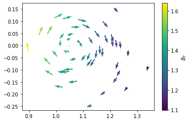

Magnetic field interpolation (J-TEXT)
import fusionsc as fsc
from fusionsc.devices import jtext
import numpy as np
from tqdm.auto import tqdm
import matplotlib.pyplot as plt
Here we show a simple example to evaluate the magnetic field at desired points. We use the function “MagneticConfig.interpolateXyz” to evaluate our field.
help(fsc.magnetics.MagneticConfig.interpolateXyz)
Help on AsyncMethodDescriptor in module fusionsc.magnetics:
interpolateXyz(self, points, grid=None) -> Any
Evaluates the magnetic field in the given coordinates. Outside the grid, the field will use the constant
values (in slab coordinates) at the grid boundary.
Parameters:
- points: A numpy-array of shape [3, ...] (at least 1D) with the points in x, y, z coordinates.
- grid: An optional grid parameter required if the field is not yet computed. The grid
Returns:
A numpy array of shape points.shape with the field as x, y, z field.
*Note* Has :ref:`asynchronous variant<Asynchronous Function>` '.asnc(...)' that returns Promise[...]
efitExample = jtext.exampleGeqdsk()
field = fsc.magnetics.MagneticConfig.fromEFit(efitExample).compute(jtext.defaultGrid())
r, z = np.random.multivariate_normal(
mean = [1.1, 0], cov = [[0.01, 0], [0, 0.01]],
size = 50
).T
x = r
y = 0 * r
Bx, By, Bz = field.interpolateXyz([x, y, z])
plt.quiver(r, z, Bx, Bz, By)
plt.colorbar(label = "$B_T$")
<matplotlib.colorbar.Colorbar at 0x1744ef4e260>
